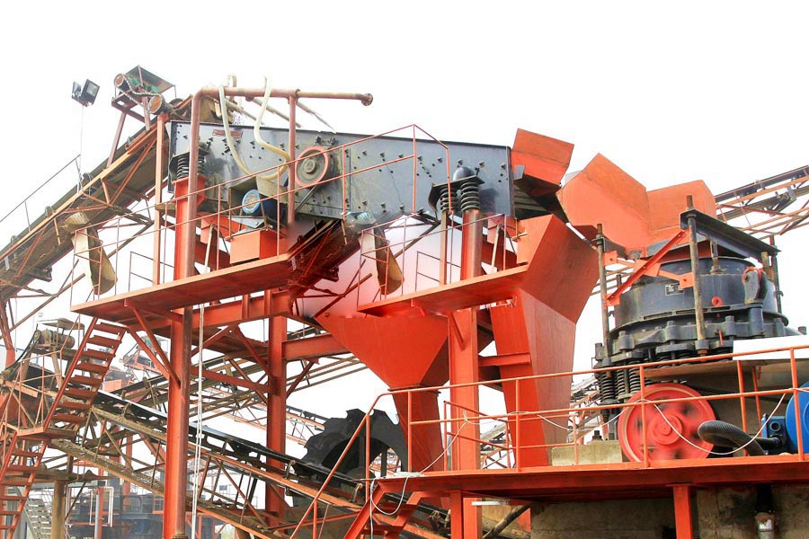

Construction waste crushing production line

Mobile construction waste crushing station for urban construction waste crushing.
basalt artificial stone crusher manufacturers
basalt artificial stone crusher manufacturers. Broken basalt which device has broken basalt crushing and processing equipment are optional: CZS efficient cone crusher, spring cone crusher, hydraulic cone crusher, jaw crusher, impact crusher, impact crusher and so on.
Basalt cone crusher, CAG specialized in manufacturing basalt cone crusher, has introduced Japan and Taiwan technology, hard quality, production, smooth operation, low cost, high return on investment of 5% to 10% of peers! With the quality of survival.
The bulk modulus of elasticity of basalt is between 2.8g/cm3 and 3.3g/cm3 and the dense basalt is of high compressive strength, which can be as high as 300MPa.The basalt has a high rigidity (its Moh’s hardness is 5-9), so it has excellent abrasive resistance. In terms of structure, those many joints which are hexagon also insure the high resistance. Because of the brittleness of basalt, it is difficult to exploit chunk basalt. That is why basalt is widely distributed but little facing basalt exists.

Application
basalt artificial stone crusher price. Basalt is a great material for producing cast stone. Cast stone is made from basalt which get casted, crystallized and annealed. The cast stone is more abrasion resistant than alloy steel and as corrosion resistant as rubber. Basalt fibers can be used in various branches of industry fully replacing cancerous asbestos and to a considerable degree glass fibers and metals. Basalt is the ideal materials for highway, railway airfield runway and it is featured with high resistance to pressure, low crushing strength, high resistance to corrosion and asphalt adhesion.
Basalt crusher, Basalt crushing production line, raw materials: basalt, Yield: 350t / h, basalt crusher equipment configuration: vibrating feeder, jaw crusher, cone crusher, impact crusher, circular vibrating screen and belt conveyor machine.
Basalt Crusher
basalt artificial stone crusher for sale. Based on years of production experience, we absorb technology advantages from the same field abroad and domestic, organizing elite basalt crushing experts to investigate, research, try again and again; finally, we develop CAG basalt crusher and basalt grinding machine. Our basalt crusher includes 4 series: jaw crusher series, cone crusher series, impact crusher series and mobile crusher series, of which cone crusher series and mobile crusher series have better performance. The basalt cone crusher friction disc design and rotation of eccentric shaft bushing around fix cone plus more reasonable "labyrinth seal" system are unique features, which have more advantages like easier operation, larger application scope, more reliable, more smooth functioning comparing with traditional basalt crusher. It is the most ideal equipment as basalt crusher.
Basalt Grinding Machine
Basalt grinding machine is widely used in metallurgy, building materials, chemicals, mining minerals in areas which need to pulverize basalt. According to the fine grinding of basalt and discharging basalt fineness, basalt grinding machine can be divided into Raymond Mill powder machine, high pressure hanging roller mill grinding machines, high pressure Powder Mill, through centrifugal Mill overpressure trapezoid Mill, tricycle in the six-speed milling machine types.
Basalt sand, basalt sand production line, basalt is hard and tough, and higher silicon content material belongs in the actual crushing operations more difficult to break in, crushing the higher cost of materials. Thus, for basalt crushing process must be properly designed.
basalt artificial stone crusher supplier. Basalt processing choice of which broken equipment, basalt cone crusher cone crusher is the introduction, on the basis of absorbing foreign technology, according to customer needs, based on set theory and multi-laminated crushing less grinding broken conceptual design and development of high pendulum frequency, optimized cavity and reasonable in one stroke.
Leave Me A Message, Now
If you have any questions regarding equipment prices, production line configuration or other problems, you can send a message to us, we will contact you soon.